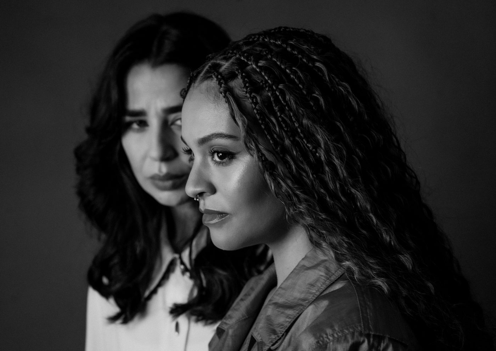

Espetáculo ADULTO estreia no Sesc Ipiranga e questiona a ideia do amor romântico

Com dramaturgia de Fran Ferraretto e direção de Lavínia Pannunzio, montagem aborda temas como traição, saúde mental, monogamia, machismo, maternidade e dinheiro
O Sesc Ipiranga recebe, a partir de 29 de agosto de 2025, a temporada de estreia do espetáculo ADULTO, escrito por Fran Ferraretto e dirigido por Lavínia Pannunzio. Em cartaz até 12 de outubro, a peça traz para o palco uma reflexão sobre os limites e transformações do amor contemporâneo, desconstruindo a visão idealizada do amor romântico por meio da história de dois casais que enfrentam dilemas distintos.
A montagem reúne duas artistas premiadas da cena paulistana: Fran Ferraretto, indicada ao APCA 2024 na categoria dramaturgia, e Lavínia Pannunzio, vencedora dos prêmios Shell e APCA, além de mais de dez indicações por suas atuações e direções.
Entre segredos, crises e escolhas
A narrativa começa com a revelação de um segredo que rompe o silêncio em um casal, João (Iuri Saraiva) e Sara (Fran Ferraretto), colocando em evidência traições, frustrações e desejos não ditos. Sara, revisora em uma agência literária, sonha em ser dramaturga e escreve sua primeira peça durante a encenação, criando um paralelo entre a realidade e a ficção que o público acompanha.
O enredo se intensifica com a chegada de Vitor (Sidney Santiago Kuanza) e Paula (Jennifer Souza), casal de amigos que encara o amor e a vida de maneira completamente diferente. Essa convivência provoca reflexões sobre modelos de relacionamento e expõe contrastes entre ambições, posturas e afetos.
Questões como machismo, saúde mental, maternidade, monogamia, liberdade individual, libido e dinheiro são atravessadas de forma direta, mas também permeadas por momentos de leveza e humor, revelando a intimidade e a competitividade entre os personagens.
Direção e estética da montagem
Segundo a diretora Lavínia Pannunzio, o texto de Ferraretto possibilitou uma construção cênica em que “absolutamente tudo pode acontecer”, criando um jogo teatral entre tempos e espaços. O cenário de Mira Andrade utiliza uma mesa multifuncional como elemento central, representando diferentes ambientes da narrativa, enquanto a trilha de Rafael Thomazini mistura ruídos cotidianos e músicas brasileiras para reforçar a atmosfera de realismo e proximidade.
Sinopse
No limite entre realidade e ficção, ADULTO apresenta a crise conjugal de João e Sara, desencadeada pela revelação de um segredo. Enquanto Sara escreve sua primeira peça, os conflitos se entrelaçam com a chegada de Vitor e Paula, casal que provoca novas reflexões sobre a ideia do amor romântico. Entre dilemas íntimos e sociais, a peça aborda temas universais que atravessam qualquer relação.
Serviço
ADULTO
📅 Data: 29 de agosto a 12 de outubro de 2025
Sextas e sábados às 20h; domingos às 18h (exceto 07/09)
Sessão com Libras: 19/09 às 20h
Sessão especial para grupos: 02/10 (quinta-feira) às 20h
📍 Local: Teatro do Sesc Ipiranga – Rua Bom Pastor, 822, Ipiranga – São Paulo/SP
🎟️ Ingressos: R$60 (inteira), R$30 (meia) e R$18 (credencial plena)
⏱️ Duração: 90 minutos
🔞 Classificação indicativa: 14 anos
📲 Instagram: @adultoapeca